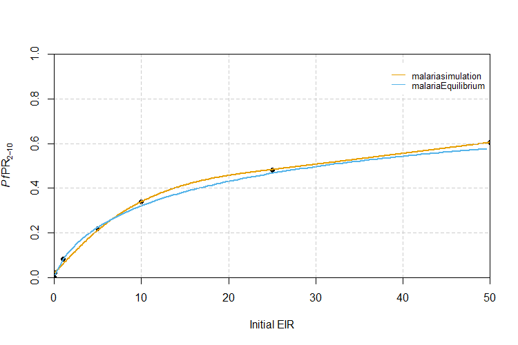
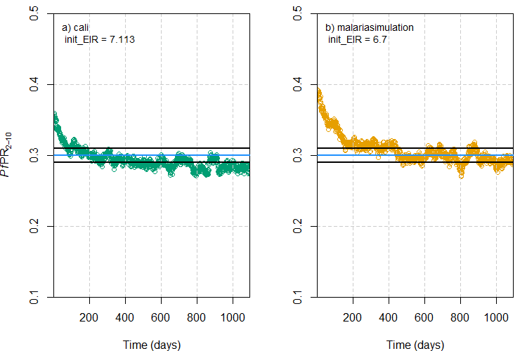

EIRprevmatch.Rmd
# Load the requisite packages:
library(malariasimulation)
library(malariaEquilibrium)
# Set colour palette:
cols <- c("#E69F00", "#56B4E9", "#009E73", "#CC79A7","#F0E442", "#0072B2", "#D55E00")The entomological inoculation rate (EIR), defined as the number of infectious bites experienced per person per unit time, and malaria prevalence, the proportion of the population with detectable malaria, are two metrics used to measure and/or describe malaria transmission. With respect to the latter, the focus is often on the prevalence rate of Plasmodium falciparum in children aged two to ten years old, denoted PfPR2-10.
When setting up a simulation, malariasimulation users
often need to calibrate the model run to an observed level of
transmission. Calibrating to an EIR value can be done directly using the
set_equilibrium() function, but EIR is difficult to measure
and in practice PfPR2-10 is more commonly
recorded/reported as a measure of transmission. However,
malariasimulation does not allow users to calibrate
directly to an PfPR2-10 value. To calibrate to a
target PfPR2-10, users must instead identify and
input the EIR value that yields the target PfPR2-10
value. In this vignette, three methods for matching the EIR to a target
PfPR2-10 are outlined and compared.
The first and fastest method uses the malariaEquilibrium
package function human_equilibrium() to calculate the
equilibrium PfPR2-10 for a given EIR using the
canonical equilibrium solution for the malariasimulation
model. The second method involves running malariasimulation
simulations across a small set of initial EIR values, extracting the
PfPR2-10 from each simulation run, and fitting a
model relating initial EIR to PfPR2-10 to allow
users to predict the initial EIR value required to yield the desired
PfPR2-10. The third approach is to calibrate the
model using the cali package function (see https://github.com/mrc-ide/cali for more information)
calibrate() , which searches a user-defined EIR parameter
space and identifies the value which yields the target
PfPR2-10 to a defined tolerance.
The malariaEquilibrium package function
human_equilibrium() returns the canonical equilibrium
solution for a given EIR and the PfPR2-10 can be
calculated from the output (see https://github.com/mrc-ide/malariaEquilibrium for more
information). The first step is to set a large range of EIR values to
generate matching PfPR2-10 values for. Next, we load
the package’s default parameter set, specify an effective clinical
treatment coverage (ft) of 0.45 and, for each EIR value
generated, run the human_equilibrium() function.
The human_equilibrium() function returns a dataframe
containing the proportion of each age class in each state variable at
equilibrium. The PfPR2-10 can be calculated from the
output for each EIR value by summing the proportion of people aged 2-10
with cases of malaria (pos_M) and dividing this proportion
by the proportion of the population between the ages 2-10
(prop). Finally, we store the matching EIR and
PfPR2-10 values in a data frame.
# Establish a range of EIR values to generate matching PfPR2-10 values for:
malEq_EIR <- seq(from = 0.1, to = 50, by = 0.5)
# Load the base malariaSimulation parameter set:
q_simparams <- malariaEquilibrium::load_parameter_set("Jamie_parameters.rds")
# Use human_equilibrium() to calculate the PfPR2-10 values for the range of
# EIR values:
malEq_prev <- vapply(
malEq_EIR,
function(eir) {
eq <- malariaEquilibrium::human_equilibrium(
eir,
ft = 0.45,
p = q_simparams,
age = 0:100
)
sum(eq$states[3:11, 'pos_M']) / sum(eq$states[3:11, 'prop'])
},
numeric(1)
)
# Establish a dataframe containing the matching EIR and PfPR2-10 values:
malEq_P2E <- cbind.data.frame(EIR = malEq_EIR, prev = malEq_prev)
# View the dataframe containing the EIR and matching PfPR2-10 values:
head(malEq_P2E, n = 7)
#> EIR prev
#> 1 0.1 0.01091840
#> 2 0.6 0.05245160
#> 3 1.1 0.08379745
#> 4 1.6 0.10974305
#> 5 2.1 0.13217140
#> 6 2.6 0.15202184
#> 7 3.1 0.16985615As this method does not involve running simulations it can return
matching PfPR2-10 for a wide range of EIR values
very quickly. However, it is only viable for systems at steady state,
with a fixed set of parameter values, and only enables the user to
capture the effects of the clinical treatment of cases. Often when
running malariasimulation simulations, one or both of these
conditions are not met. In this example, we have set the proportion of
cases effectively treated (ft) to 0.45 to capture the
effect of clinical treatment with antimalarial drugs. However, the user
may, for example, also wish to include the effects of a broader suite of
interventions (e.g. bed nets, vaccines, etc.), or to capture changes in
the proportion of people clinically treated over time. In these cases, a
different solution would therefore be required.
Where the malariaEquilibrium method is not viable, an
alternative is to run malariasimulation simulations over a
smaller range of initial EIR values, extract the
PfPR2-10 from each run, fit a model relating initial
EIR to PfPR2-10, and use the model to predict the
initial EIR value required to yield the desired
PfPR2-10. This approach allows users to benefit from
the tremendous flexibility in human population, mosquito population, and
intervention package parameters afforded by the
malariasimulation package. An example of this method is
outlined below.
To run malariasimulation, the first step is to generate
a list of parameters using the get_parameters() function,
which loads the default malariasimulation parameter list.
Within this function call, we adapt the average age of the human
population to flatten its demographic profile, instruct the model to
output malaria prevalence in the age range of 2-10 years old, and switch
off the individual-based mosquito module. The set_species()
function is then called to specify a vector community composed of
An. gambiae, An. funestus, and An arabiensis
at a ratio of 2:1:1. The set_drugs() function is used to
append the built-in parameters for artemether lumefantrine (AL) and,
finally, the set_clinical_treatment() function is called to
specify a treatment campaign that distributes AL to 45% of the
population in the first time step (t = 1).
# Specify the time frame over which to simulate and the human population size:
year <- 365
human_population <- 5000
# Use the get_parameters() function to establish a list of simulation parameters:
simparams <- get_parameters(list(
# Set the population size:
human_population = human_population,
# Set the average age (days) of the population:
average_age = 23 * year,
# Instruct model to render prevalence in age group 2-10:
prevalence_rendering_min_ages = 2 * year,
prevalence_rendering_max_ages = 10 * year))
# Use the set_species() function to specify the mosquito population (species and
# relative abundances):
simparams <- set_species(parameters = simparams,
species = list(arab_params, fun_params, gamb_params),
proportions = c(0.25, 0.25, 0.5))
# Use the set_drugs() function to append the in-built parameters for the
# drug artemether lumefantrine (AL):
simparams <- set_drugs(simparams, list(AL_params))
# Use the set_clinical_treatment() function to parameterise human
# population treatment with AL in the first timestep:
simparams <- set_clinical_treatment(parameters = simparams,
drug = 1,
timesteps = c(1),
coverages = c(0.45))Having established a set of malariasimulation
parameters, we are now ready to run simulations. In the following code
chunk, we’ll run the run_simulation() function across a
range of initial EIR values to generate sufficient points to fit a curve
matching PfPR2-10 to the initial EIR. For each
initial EIR, we first use the set_equilibrium() to update
the model parameter list with the human and vector population parameter
values required to achieve the specified EIR at equilibrium. This
updated parameter list is then used to run the simulation.
The run_simulation() outputs an EIR per time step, per
species, across the entire human population. We first convert these to
get the number of infectious bites experienced, on average, by each
individual across the final year across all vector species. Next, the
average PfPR2-10 across the final year of the
simulation is calculated by dividing the total number of individuals
aged 2-10 by the number (n_age_730_3650) of detectable
cases of malaria in individuals aged 2-10
(n_detect_lm_730_3650) on each day and calculating the mean
of these values. Finally, initial EIR, output EIR, and
PfPR2-10 are stored in a data frame.
# Establish a vector of initial EIR values to simulate over and generate matching
# PfPR2-10 values for:
init_EIR <- c(0.01, 0.1, 1, 5, 10, 25, 50)
# For each initial EIR, calculate equilibrium parameter set and run the simulation:
malSim_outs <- lapply(
init_EIR,
function(init) {
p_i <- set_equilibrium(simparams, init)
run_simulation(5 * year, p_i)
}
)
# Convert the default EIR output (per vector species, per timestep, across
# the entire human population) to a cross-vector species average EIR per
# person per year across the final year of the simulation:
malSim_EIR <- lapply(
malSim_outs,
function(output) {
mean(
rowSums(
output[
output$timestep %in% seq(4 * 365, 5 * 365),
grepl('EIR_', names(output))
] / human_population * year
)
)
}
)
# Calculate the average PfPR2-10 value across the final year for each initial
# EIR value:
malSim_prev <- lapply(
malSim_outs,
function(output) {
mean(
output[
output$timestep %in% seq(4 * 365, 5 * 365),
'n_detect_lm_730_3650'
] / output[
output$timestep %in% seq(4 * 365, 5 * 365),
'n_age_730_3650'
]
)
}
)
# Create dataframe of initial EIR, output EIR, and PfPR2-10 results:
malSim_P2E <- cbind.data.frame(init_EIR, EIR = unlist(malSim_EIR), prev = unlist(malSim_prev))
# View the dataframe containing the EIR and matching PfPR2-10 values:
malSim_P2E
#> init_EIR EIR prev
#> 1 0.01 1.193078e-36 0.00000000
#> 2 0.10 7.249840e-02 0.01200683
#> 3 1.00 1.067660e+00 0.07826963
#> 4 5.00 5.573249e+00 0.25339692
#> 5 10.00 1.069301e+01 0.32331948
#> 6 25.00 2.688210e+01 0.49189234
#> 7 50.00 5.288305e+01 0.59895267Having run malariasimulation simulations for a range of
initial EIRs, we can fit a line of best fit through the initial EIR and
PfPR2-10 data using the gam() function
(mgcv) and then use the predict() function to
return the PfPR2-10 for a wider range of initial
EIRs (given the set of parameters used).
library(mgcv)
# Fit a line of best fit through malariasimulation initial EIR and PfPR2-10
# and use it to predict a series of PfPR2-10 values for initial EIRs ranging
# from 0.1 to 50:
malSim_fit <- predict(gam(prev~s(init_EIR, k = 5), data = malSim_P2E),
newdata = data.frame(init_EIR = c(0, seq(0.1, 50, 0.1))),
type = "response")
# Create a dataframe of initial EIR values and PfPR2-10 values:
malSim_fit <- cbind(malSim_fit, data.frame(init_EIR = c(0 ,seq(0.1, 50, 0.1))))Let’s visually compare the malariaEquilibrium and
malariasimulation methods for matching EIR to
PfPR2-10 values. In the section below we open a
blank plot, plot the initial EIR and resulting
PfPR2-10 points generated using
malariasimulation runs and overlay the line of best fit
(orange line). Also overlayed is a line mapping EIR and
PfPR2-10 values calculated using
malariaEquilibrium (blue line).
# Establish a plotting window:
plot(x = 1, type = "n",
xlab = "Initial EIR", ylab = expression(paste(italic(Pf),"PR"[2-10])),
xlim = c(0,50), ylim = c(0, 1),
xaxs = "i", yaxs = "i");grid(lty = 2, col = "grey80", lwd = 0.5)
# Overlay the initial EIR and corresponding PfPR2-10 points from malariasimulation:
points(x = malSim_P2E$init_EIR,
y = malSim_P2E$prev,
pch = 19,
col = 'black')
# Overlay the malariasimulation line of best fit:
lines(x = malSim_fit$init_EIR,
y = malSim_fit$malSim_fit,
col = cols[1],
lwd = 2,
type = "l",
lty = 1)
# Overlay the malariaEquilibrium EIR to PfPR2-10 line:
lines(x = malEq_P2E$EIR,
y = malEq_P2E$prev,
col = cols[2],
type = "l",
lwd = 2,
lty = 1)
# Add a legend:
legend("topright",
legend = c("malariasimulation", "malariaEquilibrium"),
col = c(cols[1:2]),
lty = c(1,1),
box.col = "white",
cex = 0.8)
We can see that the malariaEquilibrium provides a
reasonable approximation when the target PfPR2-10 is
low, but recommends slightly different initial EIR values for
intermediate PfPR2-10 values. However, in our
example we only simulated clinical treatment covering 45% of the
population. If we needed to identify the EIR to yield a target
PfPR2-10 value in a scenario in which additional
interventions, such as bed nets or vaccines, had been deployed, the
difference between the EIR value recommended by these methods would be
likely to increase significantly.
Using the fitted relationship between initial EIR and PfPR2-10, we can create a function that returns the EIR value(s) estimated to yield a target PfPR2-10 given the model parameters. The function works by finding the closest PfPR2-10 value from the values generated when we fit the model to a target value input by the user, and then using that index to return the corresponding initial EIR value.
# Store some target PfPR2-10 values to match to:
PfPRs_to_match <- c(0.10, 0.25, 0.35, 0.45)
# Create a function to match these baseline PfPR2-10 values to EIR values
# using the model fit:
match_EIR_to_PfPR <- function(x){
m <- which.min(abs(malSim_fit$malSim_fit-x))
malSim_fit[m,2]
}
# Use the function to extract the EIR values for the specified
# PfPR2-10 values:
matched_EIRs <- unlist(lapply(PfPRs_to_match, match_EIR_to_PfPR))
# Create a dataframe of matched PfPR2-10 and EIR values:
cbind.data.frame(PfPR = PfPRs_to_match, Matched_EIR = matched_EIRs)The third option is to use the calibrate() function from
the cali package (for details see: https://github.com/mrc-ide/cali) to return the EIR
required to yield a target PfPR2-10. Rather than
manually running a series of simulations with varied, user-defined EIRs,
this package contains the calibrate() function, which
calibrates malariasimulation simulation outputs to a target
PfPR2-10 value within a user-specified tolerance by
trying a series of EIR values within a defined range.
The calibrate() function accepts as inputs a list of
malariasimulation parameters, a summary function that takes
the malariasimulation output and returns a vector of the
target variable (e.g. a function that returns the
PfPR2-10), and a tolerance within which to accept
the output target variable value and terminate the routine. To reduce
the time taken by the calibrate() function, the user can
also specify upper and lower bounds for the EIR space the function will
search. The function runs through a series of
malariasimulation simulations, trying different EIRs and
honing in on the target value of the target variable, terminating when
the target value output falls within the tolerance specified.
library(cali)
# Prepare a summary function that returns the mean PfPR2-10 from each simulation output:
summary_mean_pfpr_2_10 <- function (x) {
# Calculate the PfPR2-10:
prev_2_10 <- mean(x$n_detect_lm_730_3650/x$n_age_730_3650)
# Return the calculated PfPR2-10:
return(prev_2_10)
}
# Establish a target PfPR2-10 value:
target_pfpr <- 0.3
# Add a parameter to the parameter list specifying the number of timesteps to
# simulate over. Note, increasing the number of steps gives the simulation longer
# to stablise/equilibrate, but will increase the runtime for calibrate().
simparams$timesteps <- 3 * 365
# Establish a tolerance value:
pfpr_tolerance <- 0.01
# Set upper and lower EIR bounds for the calibrate function to check (remembering EIR is
# the variable that is used to tune to the target PfPR):
lower_EIR <- 5; upper_EIR <- 8
# Run the calibrate() function:
cali_EIR <- calibrate(target = target_pfpr,
summary_function = summary_mean_pfpr_2_10,
parameters = simparams,
tolerance = pfpr_tolerance,
low = lower_EIR, high = upper_EIR)
# Use the match_EIR_to_PfPR() function to return the EIR predicted to be required under the
# malariasimulation method:
malsim_EIR <- match_EIR_to_PfPR(x = target_pfpr)The calibrate() function is a useful tool, but be aware
that it relies on the user selecting and accurately coding an effective
summary function, providing reasonable bounds on the EIR space to
explore, and selecting a population size sufficiently large to limit the
influence of stochasticity.
As a final exercise, let’s compare graphically the
calibrate() approach with the
malariasimulation method when the same parameter set is
used. The plot below shows the change in PfPR2-10
over the duration of the simulation under the initial EIR values
recommended by the a) cali and b)
malariasimulation methods to achieve the target
PfPR2-10 value of 0.3. The blue horizontal line
represents the target PfPR2-10 and the black lines
either side are the upper and lower tolerance limits specified for the
cali method.
# Use the set_equilibrium() function to calibrate the simulation parameters to the EIR:
simparams_cali <- set_equilibrium(simparams, init_EIR = cali_EIR)
simparams_malsim <- set_equilibrium(simparams, init_EIR = malsim_EIR)
# Run the simulation:
cali_sim <- run_simulation(timesteps = (simparams_cali$timesteps),
parameters = simparams_cali)
malsim_sim <- run_simulation(timesteps = (simparams_malsim$timesteps),
parameters = simparams_malsim)
# Extract the PfPR2-10 values for the cali and malsim simulation outputs:
cali_pfpr2_10 <- cali_sim$n_detect_lm_730_3650 / cali_sim$n_age_730_3650
malsim_pfpr2_10 <- malsim_sim$n_detect_lm_730_3650 / malsim_sim$n_age_730_3650
# Store the PfPR2-10 in each time step for the two methods:
df <- data.frame(timestep = seq(1, length(cali_pfpr2_10)),
cali_pfpr = cali_pfpr2_10,
malsim_pfpr = malsim_pfpr2_10)
# Set the plotting window:
par(mfrow = c(1, 2), mar = c(4, 4, 1, 1))
# Plot the PfPR2-10 under the EIR recommended by the cali method:
plot(x = df$timestep,
y = df$malsim_pfpr,
type = "b",
ylab = expression(paste(italic(Pf),"PR"[2-10])),
xlab = "Time (days)",
ylim = c(target_pfpr - 0.2, target_pfpr + 0.2),
#ylim = c(0, 1),
col = cols[3])
# Add grid lines
grid(lty = 2, col = "grey80", lwd = 0.5)
# Add a textual identifier and lines indicating target PfPR2-10 with
# tolerance bounds:
text(x = 10, y = 0.47, pos = 4, cex = 0.9,
paste0("a) cali \n init_EIR = ", round(cali_EIR, digits = 3)))
abline(h = target_pfpr, col = "dodgerblue", lwd = 2)
abline(h = target_pfpr - pfpr_tolerance, lwd = 2)
abline(h = target_pfpr + pfpr_tolerance, lwd = 2)
# Plot the PfPR2-10 under the EIR recommended by the malariasimulation method:
plot(x = df$timestep,
y = df$cali_pfpr,
type = "b",
xlab = "Time (days)",
ylab = "",
ylim = c(target_pfpr - 0.2, target_pfpr + 0.2),
#ylim = c(0, 1),
col = cols[1])
# Add grid lines
grid(lty = 2, col = "grey80", lwd = 0.5)
# Add a textual identifier and lines indicating target PfPR2-10 with
# tolerance bounds
text(x = 10, y = 0.47, pos = 4, cex = 0.9,
paste0("b) malariasimulation \n init_EIR = ", round(malsim_EIR, digits = 3)))
abline(h = target_pfpr, col = "dodgerblue", lwd = 2)
abline(h = target_pfpr - pfpr_tolerance, lwd = 2)
abline(h = target_pfpr + pfpr_tolerance, lwd = 2)